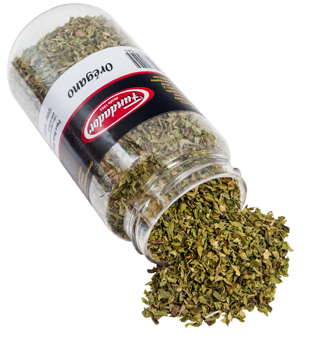
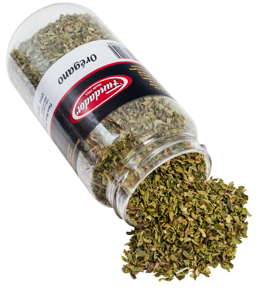
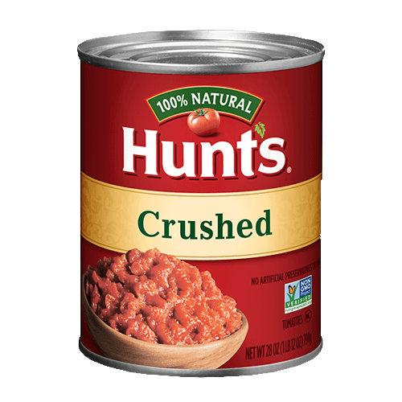
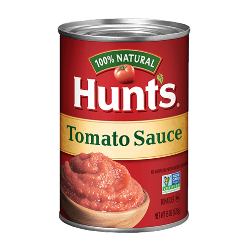
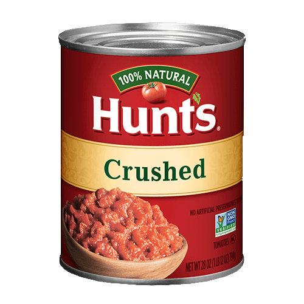
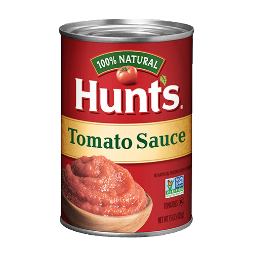
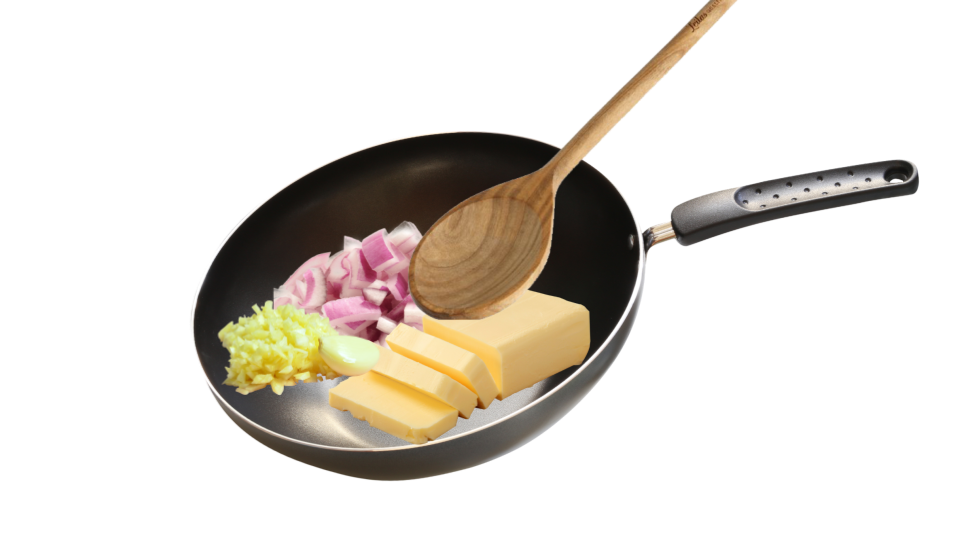
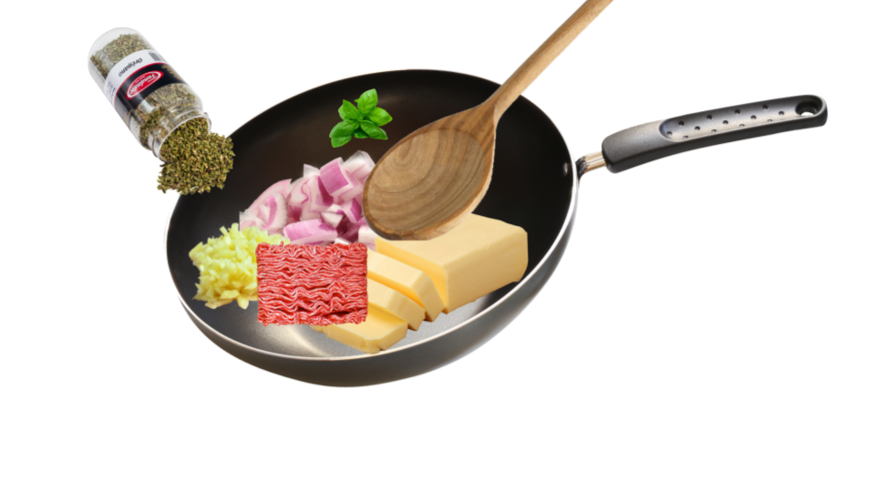
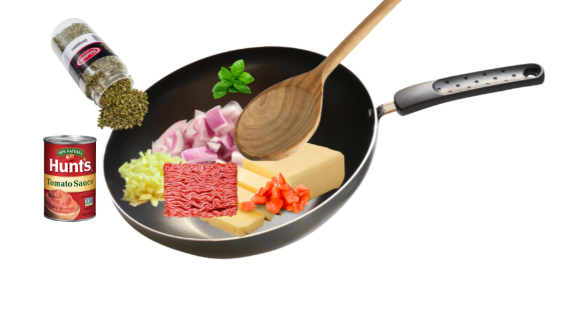
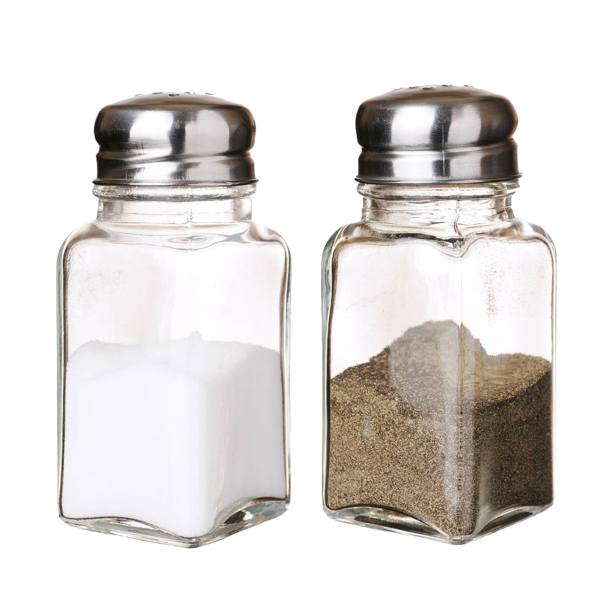

 







Step 2: Making Meat Sauce
STIR in minced garlic and sauté for a few more minutes.
Add ground beef and dried oregano.
COOK the meat and use a wooden spoon to break it into smaller pieces.
When meat pieces are browned,
STIR in the tomato sauce and crushed tomatoes.
Cover the sauce pot for 30-60 minutes, stirring occasionally.
When the sauce is done cooking, add the chopped basil and stir.
ADD salt and pepper as needed.
Add 1-2 tablespoons of sugar if the sauce is too acidic for your taste.